전자산업기사 (2008-05-11 기출문제)
1과목: 전자회로
1. 정전압 전원장치에서 무부하 때 직류 출력 전압이 150[V], 전 부하 때의 출력전압이 125[V] 이었다. 전압변동률은?
- 13[%]
- 15[%]
- 20[%]
- 25[%]
(정답률: 77%)

2. 다음의 연산증폭기 회로에서 R1 = 3[kΩ], R2 = 6[kΩ]일 경우 전압 이득 Av는 얼마인가?
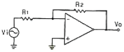
- -2
- 2
- -3
- 3
(정답률: 87%)
3. 이미터 플로어의 특징에 대한 설명으로 적합하지 않은 것은?
- 전류이득은 크다.
- 전압 이득이 1에 가깝다.
- 완충 증폭기로 주로 사용된다.
- 입력 임피던스는 낮고 출력 임피던스는 크다.
(정답률: 73%)
4. 차동 증폭기에서 동상신호제거비(CMRR)에 대한 설명으로 옳은 것은?
- 이 값은 클수록 좋다.
- 이 값은 작을수록 좋다.
- 동상 이득이 클수록 이 값이 크다.
- 이 값이 크면 증폭기의 잡음출력이 크다.
(정답률: 89%)
5. 트랜지스터를 증폭기로 사용할 때의 동작 영역으로 옳은 것은?
- 차단 영역
- 포화 영역
- 활성 영역
- 차단 영역 및 포화 영역
(정답률: 87%)
6. 발진회로의 특성에 대한 설명으로 적합하지 않은 것은?(오류 신고가 접수된 문제입니다. 반드시 정답과 해설을 확인하시기 바랍니다.)
- 정궤환을 이용한다.
- 입력 신호가 필요없다.
- 궤환 루프의 이득이 0 이다.
- 바크하우젠의 발진 조건은
 이다.
이다.
(정답률: 67%)
7. 다음 회로의 궤환율 β는 얼마인가?
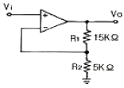
- 0.25
- 1
- -1
- 2.5
(정답률: 70%)
8. 중간주파수대역의 증폭도가 약 14.1인 증폭회로에서 고역차단주파수에서의 증폭도로 가장 적합한 것은?
- 5
- 10
- 20
- 32
(정답률: 52%)
9. 다음 중 부궤환 증폭기의 장점이 아닌 것은?
- 전력 효율이 개선된다.
- 주파수 특성이 개선된다.
- 일그러짐이 감소한다.
- 증폭기의 동작이 안정된다.
(정답률: 63%)
10. 어떤 트랜지스터가 VCE = 6[V]로 동작된다. 이 트랜지스터의 최대정격전력이 250[mW]이라면 트랜지스터가 견딜 수 있는 최대 컬렉터 전류는 약 몇 [mA] 인가?
- 20[mA]
- 42[mA]
- 51[mA]
- 64[mA]
(정답률: 69%)
11. 이상적인 연산증폭기의 두 입력 전압이 V1 = V2 일 때, 출력 전압은?
- ∞
- 0
- V1
- 2V1
(정답률: 87%)
12. PLL을 구성하는 회로 블록이 아닌 것은?
- 위상 검출기
- 전역 통과 필터
- 주파수 체배기
- 전압 제어 발진기
(정답률: 72%)
13. 다음 중 링(ring) 변조기의 용도로 가장 적합한 것은?
- 펄스 변조
- 주파수 변조
- 위상 변조
- 단측파대 발생
(정답률: 63%)
14. 연산증폭기에 대한 설명 중 옳은 것은?
- 높은 입력 오프셋 전압을 갖는 연산증폭기는 낮은 전압 드리프트를 갖는다.
- 연산증폭기의 입력 바이어스 전류란 두 입력단자를 통해 흘러들어가는 전류의 평균값이다.
- 연산증폭기의 슬루율(Slew Rate)이란 출력전압의 변화율을 입력 전압의 변화율로 나눈 값이다.
- 연산증폭기의 개방루프 이득이 100000 이고, 동상 이득이 0.25이면 동상신호제거비(CMRR)는 56[dB]이다.
(정답률: 66%)
15. 트랜지스터의 h 정수 중 hr의 측정시 필요한 조건은?
- 출력단자 개방
- 출력단자 단락
- 입력단자 개방
- 입력단자 단락
(정답률: 53%)
16. 전압 이득이 80[dB]인 증폭기에 궤환율이 0.01인 부궤환을 걸었을 때 증폭기의 이득은 약 얼마인가?
- 20[dB]
- 30[dB]
- 40[dB]
- 60[dB]
(정답률: 70%)
17. 다음 중 필터회로의 특성이 아닌 것은?
- 대역 통과필터의 대역폭은 하한 임계주파수와 상한 임계주파수와의 차이다.
- 대역 통과필터에서 Q 값이 클수록 대역폭이 좁아진다.
- 댐핑 계수(damping factor)는 필터 응답 특성을 결정하여 준다.
- 고역 통과필터는 특정 주파수보다 낮은 신호만 통과시킨다.
(정답률: 75%)
18. 다음의 접합형 FET 회로에서 드레인 전류 ID = 4[mA]일 때 드레인과 소스 전압 VDS는 몇 [V] 인가?
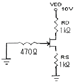
- 1[V]
- 2[V]
- 3[V]
- 4[V]
(정답률: 76%)
19. 다음 중 전력 증폭기의 설명으로 옳은 것은?
- A급의 경우가 전력 효율이 가장 좋다.
- C급의 효율은 50% 이하로 AB급보다 낮다.
- B급은 동작점이 포화 영역 부근에 존재한다.
- C급은 반송파 증폭이나 체배용으로 사용된다.
(정답률: 83%)
20. 이미터 공통 증폭회로에서 IB가 10[μA]일 때, IC가 500[μA]이다. 이것을 베이스 공통으로 했을 때 전류증폭률 α는 약 얼마인가?
- 0.96
- 0.98
- 1
- 50
(정답률: 65%)
2과목: 전기자기학 및 회로이론
21. 비유전률이 5인 등방 유전체의 한점에서의 전계의 세기가 1⑤Vm일때 의분의 세기는 몇 [C/m2]인가?
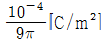
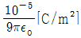
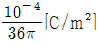
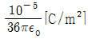
(정답률: 55%)
22. 투자율이 다른 두 자성체의 경계면에서 굴절각과 입사각의 관계로 옳은 것은?(단, θ1 는 입사각, θ2 는 굴절각이다.)
- tanθ1/tanθ2 = μ1/μ2
- tanθ2/tanθ1 = μ1/μ2
- cosθ1/cosθ2 = μ1/μ2
- sinθ1/sinθ2 = μ1/μ2
(정답률: 50%)
23. 다음이 설명하고 있는 법칙으로 알맞은 것은?
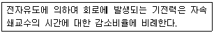
- 쿨롱의 법칙
- 가우스의 법칙
- 맥스웰의 법칙
- 패러데이의 법칙
(정답률: 76%)
24. 진공의 유전률
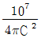
과 같은 값은 약 몇 [F/m] 인가? (단 C는 광속도라 한다.)- 8.854×10-10[F/m]
- 8.854×10-12[F/m]
- 9×109[F/m]
- 36×109[F/m]
(정답률: 56%)
25. 공기 중에서 10[V/m]의 전계를 2[A/m2]의 변위전류로 흐르게 하려면 주파수는 얼마로 하여야 하는가?
- 1200[MHz]
- 2400[MHz]
- 3600[MHz]
- 4800[MHz]
(정답률: 44%)
26. 공간적 전하분포를 갖는 유전체 중의 전계 E에 있어서 전하밀도 ρ와 전하 분포 중의 한점에 대한 전위 V와의 관계 중 전위를 생각하는 고찰점에 ρ의 전하분포가 없다면 ∇2V = 0 으로 된다는 것은?
- Laplace의 방정식
- Poisson의 방정식
- Stokes의 방정식
- Thomson의 방정식
(정답률: 50%)
27. 전계
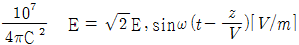
의 평면 전자파가 있다. 진공 중에서의 자계의 실효값 [AT/m]은?- 2.65×10-4Eo[AT/m]
- 2.65×10-3Eo[AT/m]
- 3.77×10-2Eo[AT/m]
- 3.77×10-1Eo[AT/m]
(정답률: 39%)
28. 권수 500회이고 자기인덕턴스가 0.⑤[H]인 코일이 있을 때 여기에 전류 3[A]를 흘리면 자속 쇄교수는 몇 [Wb] 인가?
- 0.15[Wb]
- 0.25[Wb]
- 15[Wb]
- k 25[Wb]
(정답률: 52%)
29. 자속 20[Wb]가 2[sec] 동안 코일과 쇄교하고 있다. 자속을 제거했을 때 코일의 저항 R[Ω]을 통과한 전전하가 10[C]이라면 저항 R은 몇 [Ω] 인가?
- 1[Ω]
- 2[Ω]
- 3[Ω]
- 4[Ω]
(정답률: 50%)
30. 다음 중 대전도체의 성질로 가장 알맞은 것은?
- 도체 내부에 정전에너지가 저축된다.
- 도체 표면의 정전응력은
 [N/m2]이다.
[N/m2]이다. - 도체 표면의 전계의 세기는
 [N/m]이다.
[N/m]이다. - 도체의 내부전위와 도체 표면의 전위는 다르다.
(정답률: 47%)
31. “몇 개의 전압원과 전류원이 동시에 존재하는 회로망에 있어서 회로 전류는 각 전압원이나 전류원이 각각 단독으로 가해졌을 때 흐르는 전류를 합한 것과 같다”라고 정의한 정리는?
- 상반정리(가역정리)
- 중첩의 정리
- 테브난의 정리
- 밀안의 정리
(정답률: 87%)
32. 저항과 캐패시턴스 직렬회로의 시정수는?
- R/C
- C/R
- RC
- 1/RC
(정답률: 84%)
33. 그림과 같은 2단자망의 임피던스 Z(S)는? (단, S = jω)
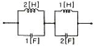
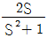
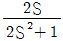
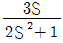
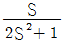
(정답률: 62%)
34. L1 = 25[H], L2 = 9[H]인 전자결합 회로에서 결합계수 K = 0.5일 때 상호 인덕턴스 M은 몇 [H] 인가?
- 0.25
- 7.5
- 9
- 11.5
(정답률: 67%)
35. 리액턴스 함수가
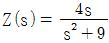
로 표시되는 리액턴스 2단자망은?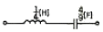
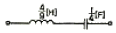
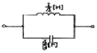
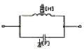
(정답률: 37%)
36.
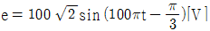
인 정현파 교류 전압의 주파수는 몇 [Hz] 인가?- 314
- 100
- 30
- 50
(정답률: 58%)
37. ABCD 파리미터(parameter)에서 C는?
- 단락 역방향 전달 어드미턴스
- 개방 역방향 전달 어드미턴스
- 개방 순방향 전달 어드미턴스
- 단락 순방향 전달 어드미턴스
(정답률: 68%)
38. 단위 길이당 임피던스 및 어드미턴스가 각각 Z 및 Y인 전송선로의 전파정수는?
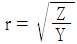
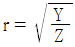
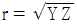
- r = YZ
(정답률: 82%)
39. 정현파 교류 전압의 파형률은?
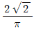
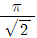
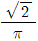
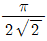
(정답률: 75%)
40. 다음 중 sint 의 Laplace 변환은?
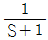
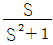
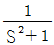
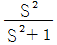
(정답률: 68%)
3과목: 전자계산기일반
41. BCD 코드 0011를 그레이(gray) 코드로 옳게 변환한 것은?
- (0001)g
- (0010)g
- (0011)g
- (0100)g
(정답률: 73%)
42. 기억장치로부터 읽어 들일 데이터의 번지를 기억하고 있는 레지스터는?
- 메모리 어드레스 레지스터(MAR)
- 메모리 버퍼 레지스터(MBR)
- 프로그램 카운터(PC)
- 명령 레지스터(IR)
(정답률: 53%)
43. 기계어(machine language)에서 조건 분기(conditional jump)를 할 때 조건 판정의 기준이 되는 레지스터는?
- 프로그램 카운터(program counter)
- 인덱스 레지스터(index register)
- 스택 포인터(stack pointer)
- 상태 레지스터(status register)
(정답률: 58%)
44. 컴퓨터에서 처리하는 자료가 작은 것부터 큰 순서로 올바르게 나열된 것은?
- 레코드(record) - 필드(field) - 파일(file)
- 레코드(record) - 파일(file) - 필드(field)
- 파일(file) - 필드(field) - 레코드(record)
- 필드(field) - 레코드(record) - 파일(file)
(정답률: 60%)
45. AND 마이크로 동작을 수행한 결과와 같은 동작을 하는 것은?
- Mask 동작
- Shift 동작
- EX-OR 동작
- Rotate 동작
(정답률: 73%)
46. 마이크로프로세서에서 입ㆍ출력장치의 주소와 기억장치의 주소가 독립적일 경우 인터페이스 하는 방식은?
- memory mapped I/O
- isolated I/O
- CPU I/O
- register I/O
(정답률: 36%)
47. 주기억장치에서 인출된 명령을 해독한 후 실행하는 주기를 무엇이라 하는가?
- instruction cycle
- fetch cycle
- execution cycle
- compute cycle
(정답률: 28%)
48. DMA(Direct Memory Access)에 관한 설명으로 옳지 않은 것은?
- 온-라인(on-line) 시스템이 여기에 속한다.
- 입ㆍ출력 속도의 향상을 목적으로 사용된다.
- 외부 장치와 메모리 사이에 직접 데이터가 전송된다.
- DMA가 실행될 동안 마이크로프로세서의 메모리 버스는 고임피던스(high impedance) 상태가 된다.
(정답률: 59%)
49. JAVA 언어에서 사용하는 접근제어 한정자가 아닌 것은?
- private
- global
- public
- protected
(정답률: 62%)
50. 프로그램 카운터(program counter)는 다음에 실행해야 할 프로그램 명령의 어떤 것을 유지하는가?
- 클록(Clock)
- 주소(Address)
- 동작(Operation)
- 상태(Status)
(정답률: 80%)
51. C 언어에서 RECORD의 구성과 가장 밀접한 관계가 있는 것은?
- struct
- main
- procedure
- define
(정답률: 84%)
52. 다음 프로그램을 수행한 결과 값은?
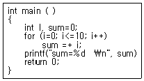
- sum = 55
- sum = 45
- sum = 11
- sum = 10
(정답률: 57%)
53. 레지스터 내용을 세 번 오른쪽으로 이동(shift right)시켰다. 실제로 이 레지스터는 무엇을 하였는가?
- multiplied by 8
- divided by 8
- divided by 3
- added 400
(정답률: 88%)
54. 다음 중 양방향성 버스(bus)인 것은?
- 어드레스 버스(address bus)
- I/O 포트 버스(I/O port bus)
- 제어 버스(control bus)
- 데이터 버스(data bus)
(정답률: 72%)
55. 다음의 진리표를 보고 논리식을 최소화 하면?
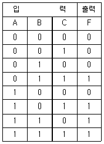
- F = AB + BC + AC
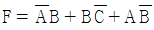
- F = A + B + C
- F = ABC
(정답률: 45%)
56. STACK 구조가 갖는 주소지정 방식은?
- 0-주소지정방식
- 1-주소지정방식
- 2-주소지정방식
- 3-주소지정방식
(정답률: 83%)
57. 다음 중 에러를 검출하고 교정까지 가능한 코드는?
- ASCII code
- hamming code
- gray code
- BCD code
(정답률: 91%)
58. 다음 주소지정방식 중 즉시(immediate) 주소지정방식의 명령어에 해당하는 것은?
- ADD A, 30H
- CPL
- AND D
- JR D4
(정답률: 52%)
59. 단항(unary) 연산자 연산에 해당하지 않는 것은?
- COMPLEMENT
- MOVE
- SHIFT
- AND
(정답률: 89%)
60. 4096×8 EPROM인 메모리에서 어드레스와 데이터는 각각 몇 비트씩인가?
- 어드레스 8비트, 데이터 8비트
- 어드레스 8비트, 데이터 12비트
- 어드레스 12비트, 데이터 8비트
- 어드레스 12비트, 데이터 12비트
(정답률: 80%)
4과목: 전자계측
61. 그림과 같은 회로에서 브리지 평형이 되어 검류가 G가 0을 가리켰을 때 Rx의 값은?
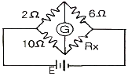
- 1.2[Ω]
- 12[Ω]
- 14[Ω]
- 30[Ω]
(정답률: 71%)
62. 가동철편형 계기의 구동 토크(TD)와 전류(I)의 관계가 옳은 것은?
- I/2에 비례한다.
- I에 비례한다.
- I2에 비례한다.
 에 비례한다.
에 비례한다.
(정답률: 80%)
63. 참값(T)이 500[V], 측정값(M)이 502.5[V]일 때 오차, 상대오차, 보정 및 보정률이 옳은 것은?
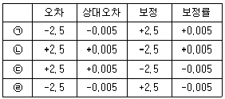
- ㉠
- ㉡
- ㉢
- ㉣
(정답률: 70%)
64. 다음 중 표준저항기의 구비조건에 해당되지 않는 것은?
- 온도계수가 적을 것
- 저항 값이 안정할 것
- 저항치가 변화하지 않을 것
- 구리에 대한 열기전력이 클 것
(정답률: 74%)
65. 오실로스코프로 진폭 변조편을 측정하여 다음과 같은 파형을 얻었다. 최대치(A) = 30[mm]로 하고 변조도(M) = 80[%]로 하기 위한 최소치 B의 크기는 약 얼마인가?
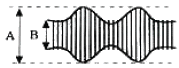
- 4.5[mm]
- 3.3[mm]
- 2.3[mm]
- 1.5[mm]
(정답률: 60%)
66. 불규칙한 비주기성 파형 또는 한 번 밖에 일어나지 않는 현상의 파형 측정에 적당한 계기는?
- 주파수 카운터
- 싱크로스코프
- VTVM
- 엡스타인 장치
(정답률: 79%)
67. 다음 중 동작 원리의 설명으로 옳지 않은 것은?
- 전류력계형 - 두전류간에 작용하는 힘을 이용
- 가동철편형 - 자계내의 철편에 작용하는 힘을 이용
- 가동코일형 - 자계와 전류 사이에 작용하는 힘을 이용
- 열전대형 계기 - 충전된 두물체 사이에 작용하는 힘을 이용
(정답률: 70%)
68. 정밀 헤테로다인 주파수계의 측정 상 주의할 점 중 옳지 않은 것은?
- 전원 전압은 규정 값으로 유지할 것
- 피측정 회로에 너무 밀결합시키지 말 것
- 보간 발진기의 f-c 곡선은 수시로 교정할 것
- 교정 후 정밀 측정은 단 시간 내에 하지 않을 것
(정답률: 60%)
69. 계기 정수 2400[회/kWh]의 적산 전력계가 30초에 10회전 했을 때의 전력은?
- 1250[W]
- 1000[W]
- 750[W]
- 500[W]
(정답률: 49%)
70. 전자회로의 주파수 특성을 시험하는데 관계없는 것은?
- 오실로스코프
- 스위프 신호 발생기
- 마커 신호 발생기
- 맥스웰 브리지
(정답률: 64%)
71. 다음 중 ?단파 표준 신호발생기의 오차에 해당되지 않는 것은?
- 변조도에 의한 주파수의 오차
- 출력 cable의 공진에 의한 오차
- 다이얼의 정도가 나쁜 경우의 오차
- 사용 중에 출력이 변동할 때의 오차
(정답률: 62%)
72. 다음은 윈 브리지(Wien Bridge)의 회로도이다. 브리지가 평형이 될 때 전원의 주파수 f는 몇 [Hz]인가? (단, T는 수화기이고, R1 = R2 = R, C1 = C2 = C 라 한다.)
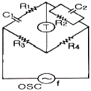
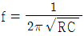
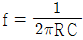
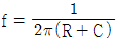
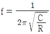
(정답률: 67%)
73. 수신기에 일정한 입력 신호를 가했을 때, 재조정을 하지 않고 얼마나 오랫동안 일정한 출력을 얻을 수 있는가의 능력은?
- 감도
- 선택도
- 충실도
- 안정도
(정답률: 78%)
74. 다음 그림과 같이 전압 V와 시간 T의 관계를 직접 측정할 수 있는 계측기는?
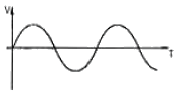
- 임피던스 분석기
- 벡터 분석기
- 오실로스코프
- 계수기
(정답률: 82%)
75. 지시 계기의 3 요소에 속하는 제동장치의 종류가 아닌것은?
- 액체 제동장치
- 스프링 제동장치
- 공기 제동장치
- 와전류 제동장치
(정답률: 63%)
76. 디지털 주파수계의 전체 블록도 중에서 시미트 트리거(schmitt trigger) 회로의 기능은?
- 구형파를 정현파로 변화
- 구형파를 삼각파로 변화
- 정현파를 구형파로 변화
- 구형파를 펄스파로 변화
(정답률: 86%)
77. 정전용량 및 손실각 측정에 주로 쓰이는 브리지 법은?
- 맥스웰 브리지법
- 헤비사이드 브리지법
- 셰링 브리지법
- 캘빈더블 브리지법
(정답률: 80%)
78. 디지털(Digital) 전압계의 원리에 해당하는 것은?
- 비교기
- 미분기
- D-A 변환기
- A-D 변환기
(정답률: 85%)
79. 역률이 0.001인 콘덴서의 Q는 얼마인가?
- 10
- 100
- 1000
- 11000
(정답률: 84%)
80. 감도가 높고, 정밀한 측정을 요구하는 경우 사용하는 측정법 중 가장 적합한 것은?
- 영위법
- 편위법
- 반경법
- 직편법
(정답률: 94%)
따라서 ((125 - 150) / 150) × 100 = -0.166... × 100 = 약 -16.67[%] 이다.
하지만 문제에서는 절대값을 구하는 것이므로 16.67[%]을 양수로 바꾸어 계산한다.
따라서 ((150 - 125) / 150) × 100 = 0.166... × 100 = 약 16.67[%] 이다.
하지만 문제에서는 반올림하여 정답을 구하도록 하였으므로, 16.67[%]을 17[%]로 반올림하여 최종적으로 정답은 "20[%]"이 된다.